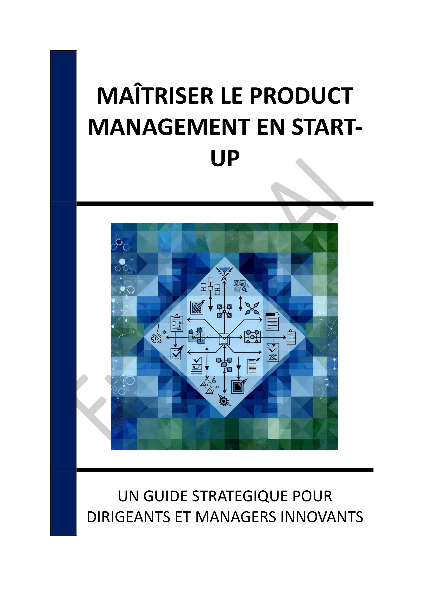

- INTRODUCTION - L'IMPORTANCE DES MÉTHODOLOGIES AGILES DANS L'INNOVATION DES START-UPS
- Chapitre 1 - INTRODUCTION AU PRODUCT MANAGEMENT : DÉFINITION ET IMPORTANCE DANS LES START-UPS
- Chapitre 2 - COMPÉTENCES CLÉS DU PRODUCT MANAGER : TECHNIQUES, ANALYTIQUES, STRATÉGIQUES ET INTERPERSONNELLES
- Chapitre 3 - MÉTHODOLOGIES AGILES : SCRUM, KANBAN ET LEUR APPLICATION DANS LES START-UPS
- Chapitre 4 - OUTILS DE GESTION DE PROJET : JIRA, TRELLO ET LEUR IMPACT SUR LA COLLABORATION
- Chapitre 5 - L'APPROCHE LEAN STARTUP : EXPÉRIMENTATION RAPIDE ET VALIDATION DES HYPOTHÈSES
- Chapitre 6 - L'IMPORTANCE DE L'ANALYSE DES DONNÉES : COMMENT INTERPRÉTER LES RETOURS UTILISATEURS
- Chapitre 7 - ALIGNEMENT STRATÉGIQUE : CRÉER UNE VISION PRODUIT CLAIRE ET COHÉRENTE AVEC LES OBJECTIFS D'ENTREPRISE
- Chapitre 8 - GESTION DES PARTIES PRENANTES : COMMUNICATION ET RÉSOLUTION DE CONFLITS
- CONCLUSION - L'AGILITÉ COMME MOTEUR DE L'INNOVATION DURABLE
📄 Consulter les annexes du livre
Mentions légales